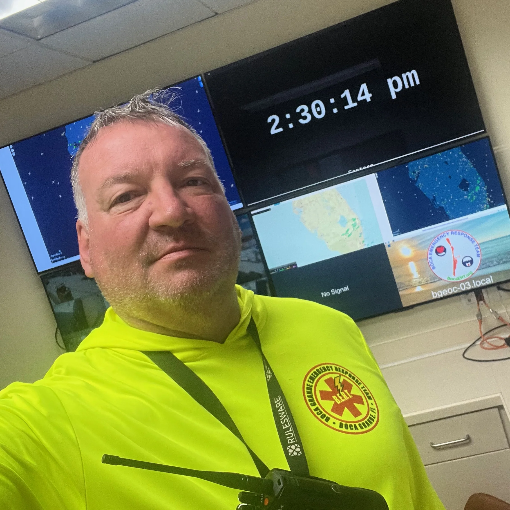

I am a member of Amateur Radio Emergency Services (ARES) for Charlotte County, Florida (CCFLARES.ORG), and I serve on the board of directors for the Amateur Radio Disaster Communications Network (ARDCN). I have extensive experience in emergency communications, having supported large-scale operations across Florida, Boston, and New York City, including the Irma disaster response, the Boston Marathon, the Head of the Charles Regatta, the New York City Marathon, NYFD ARES training, and both regional and national Boy Scout Jamborees.
Outside of my volunteer work, I am an engineer focused on designing IoT, decision, and process automation solutions. I have worked with organizations including Gatorbot, Rulesware, IBM, Pegasystems, Firepond, Rosemount Aerospace, Bell-Northern Research, and the University of Minnesota Microcomputer Research Center. I have delivered solutions for clients such as Boeing, General Dynamics, General Electric, the Department of Homeland Security, and the City of New York. My experience spans AI, cryptography, communications, rules engines, process automation, programming, and networking.
I studied at the University of Minnesota, the Massachusetts Institute of Technology, and Stanford University, earning degrees in electrical engineering along with certificates in artificial intelligence.
I live in Englewood, Florida with my wife Dana (KR4GDA). I hold both a General Mobile Radio Service license (WRCG386) and an Amateur Radio Extra Class license (W1JP), as well as an FCC pilot’s license (PMELI).
73,
Jon
W1JP

You may have noticed the banner on my page is a morse code beacon. You can turn on the sound by clicking on the banner. It is currently sending my call sign ('W1JP') over and over. If you want to practice your code you can modify the speed and send a message below. If you are a beginner it is recommended that you use WPM = 5 and Farnsworth = 20. (get used to hearing the symbols (dits and dahs) at a faster rate and receive characters at a slower rate).
The form below will enqueue the message sent to the beacon. Note it will finish the cur rent message before sending yours; however, the speed change is immediate. After your message it will go back to my call sign.
Have fun!
Interesting stuff...
This calcuates the distance to the visible horizon and the maximum theoretical distance between antennas.
Maidenhead Locator System (MLS) Gridsquare generator using your location or entering your own lattitude and longitude.